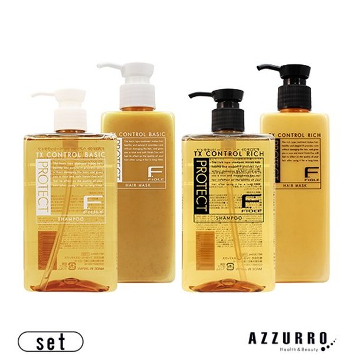
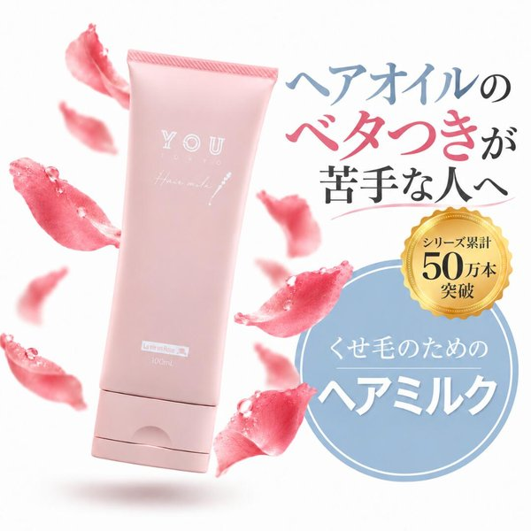
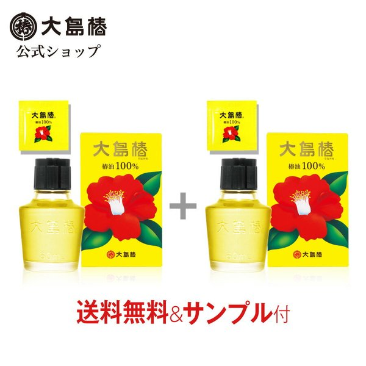
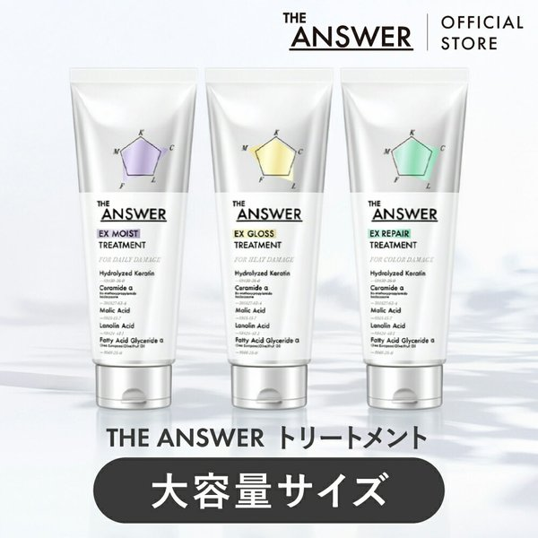
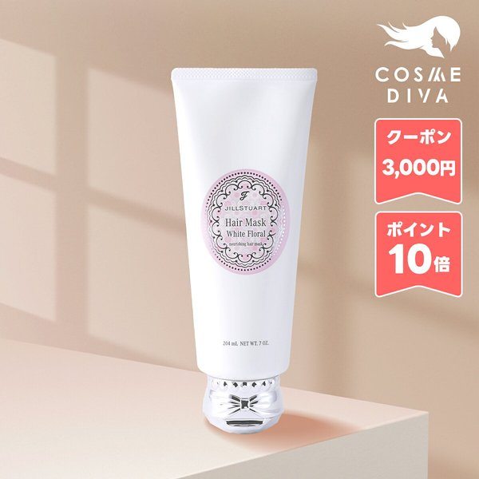
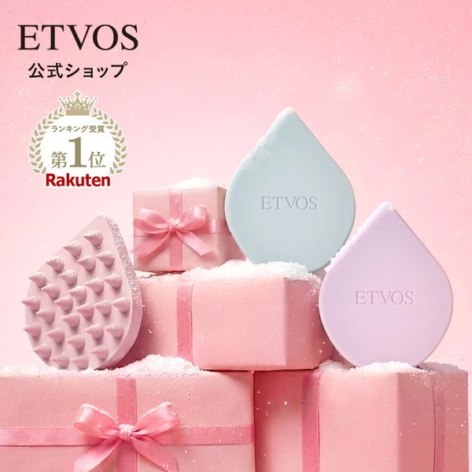
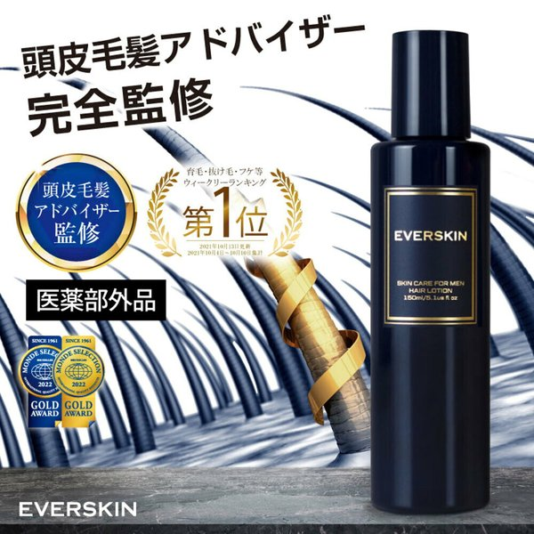
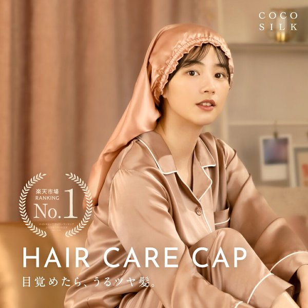
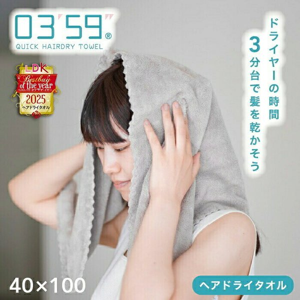

【冬の乾燥・パサつき対策】サロン級の仕上がりに！ヘアオイル・トリートメント＆頭皮ケアおすすめ10選
冬の髪は、乾燥で広がり、毛先がパサつきます。暖房の効いた部屋と外気の寒暖差、乾いた空気、静電気。髪の水分が抜ける条件が揃う季節なので、夏と同じケアでは追いつきません。
選ぶ軸は、洗い流すか流さないかと、どこを補修したいかです。毛先のパサつきと広がりを朝の支度で抑えるなら、洗い流さないオイルかミルク。内部から補修したいなら、インバスのトリートメントや週数回のヘアマスク。頭皮の乾燥やにおいが気になるなら、スカルプブラシやヘアトニックを足します。そして就寝中の摩擦。枕との接触で朝の広がりが決まるので、シルクのナイトキャップやドライタオルでの水分カットも、地味ですが効く対策です。
本記事では、楽天市場で人気・高評価のヘアオイル・トリートメント＆頭皮ケア10選を、実売価格とレビュー評価つきで写真付き紹介します。
- おすすめ10選 スペック・特徴比較表
- BEST 1｜ヘアオイル 洗い流さないアウトバス（80ml・3タイプ）
- BEST 2｜Fプロテクト シャンプー300ml＋トリートメント200g セット
- BEST 3｜ヘアミルク 洗い流さないトリートメント（セラミド・ケラチン）
- BEST 4｜椿油100% 60mL 2個セット（無香料・無着色）
- BEST 5｜EXトリートメント 大容量320g（インバス）
- BEST 6｜ホワイトフローラル ヘアマスク 200g
- BEST 7｜リラクシングマッサージブラシ（スカルプ・頭皮ケア）
- BEST 8｜育毛剤 ヘアトニック（医薬部外品・スカルプ）
- BEST 9｜シルク100% ナイトキャップ（ロングヘア対応）
- BEST 10｜ヘアドライタオル マイクロファイバー（40×100cm）
- 【読者負担0円】買わなくても得する無料サービス
- まとめ：ヘアオイル＆トリートメント10選の選び方
| 順位 | 商品名 | ブランド | 最大の特徴・おすすめ理由 | 総合評価 |
|---|---|---|---|---|
| BEST 1 | ヘアオイル 洗い流さないアウトバス（80ml・3タイプ） | ORNA ORGANIC（オルナオーガニック） | 髪質に合わせて3タイプから選べる | 4.65 |
| BEST 2 | Fプロテクト シャンプー300ml＋トリートメント200g セット | FIOLE（フィヨーレ） | サロン品のシャンプーとトリートメントがセット | 4.32 |
| BEST 3 | ヘアミルク 洗い流さないトリートメント（セラミド・ケラチン） | YOU TOKYO | 500円で試しやすい価格 | 4.49 |
| BEST 4 | 椿油100% 60mL 2個セット（無香料・無着色） | 大島椿 | 100%椿油で余計なものを足していない | 4.85 |
| BEST 5 | EXトリートメント 大容量320g（インバス） | THE ANSWER（ジアンサー） | 320gの大容量で惜しみなく使える | 4.81 |
| BEST 6 | ホワイトフローラル ヘアマスク 200g | JILL STUART（ジルスチュアート） | 週数回の集中ケアに使える | 4.80 |
| BEST 7 | リラクシングマッサージブラシ（スカルプ・頭皮ケア） | ETVOS（エトヴォス） | シャンプー中もドライでも使える | 4.74 |
| BEST 8 | 育毛剤 ヘアトニック（医薬部外品・スカルプ） | EVER SKIN（エバースキン） | 医薬部外品の育毛剤 | 4.35 |
| BEST 9 | シルク100% ナイトキャップ（ロングヘア対応） | COCOSILK（ココシルク） | シルク100%で摩擦を減らす | 4.58 |
| BEST 10 | ヘアドライタオル マイクロファイバー（40×100cm） | 0359（ゼロサンゴーキュー） | 包んでおくだけで水分を吸う | 4.67 |
ヘアオイル 洗い流さないアウトバス（80ml・3タイプ）

オーガニック成分を配合した洗い流さないヘアオイル。髪の状態に合わせて3タイプから選べ、ドライヤーの前後に使えます。オイルなのにベタつきにくく、毛先のパサつきを抑えながら乾かせるのが利点です。80mlで2,280円と続けやすい価格で、毎日のケアに組み込みやすい一本です。楽天市場での実売価格は約2,280円（2026年11月時点）。
- 髪質に合わせて3タイプから選べる
- ベタつきにくく朝も使いやすい
- レビュー14,000件超・評価4.65
- 香り付きのため、無香料を好む人は注意
Fプロテクト シャンプー300ml＋トリートメント200g セット

サロンで扱われるフィヨーレのシャンプーとトリートメントのセット。カラーやパーマで傷んだ髪の補修を意識したシリーズで、洗い上がりはきしみにくく、ドライヤー後のまとまりが変わります。シャンプー300mlとトリートメント200gの組み合わせで、2,804円とサロン品としては手に取りやすい価格です。楽天市場での実売価格は約2,804円（2026年11月時点）。
- サロン品のシャンプーとトリートメントがセット
- 傷んだ髪の補修を意識した処方
- レビュー5,600件超・評価4.32
- 業務用価格ではないため、量あたりでは市販品より高め
ヘアミルク 洗い流さないトリートメント（セラミド・ケラチン）

セラミドとケラチンを配合した洗い流さないヘアミルク。オイルが重く感じる人や、うねりやくせ毛が気になる人に向いています。乳液状で髪になじませやすく、ドライヤーの熱で広がる髪をまとめます。500円と試しやすい価格なので、まず1本使ってみる候補になります。楽天市場での実売価格は約500円（2026年11月時点）。
- 500円で試しやすい価格
- オイルより軽い乳液タイプ
- レビュー1,600件超・評価4.49
- 補修力を求めるなら、洗い流すトリートメントとの併用が要る
椿油100% 60mL 2個セット（無香料・無着色）

椿の実から採った油をそのまま瓶に詰めた椿油。無香料・無着色・無鉱物油で、毛先のパサつきを抑える用途に向いています。洗い流さないトリートメントとして毛先に少量なじませる使い方が基本で、頭皮や肌にも使えます。60mLが2本セットで、1本は洗面所、もう1本は持ち歩き用に分けられます。楽天市場での実売価格は約3,960円（2026年11月時点）。
- 100%椿油で余計なものを足していない
- 無香料・無着色
- レビュー372件・評価4.85
- つけすぎると重くなるので、1〜2滴から試す
EXトリートメント 大容量320g（インバス）

花王のTHE ANSWERシリーズの洗い流すトリートメント。大容量の320gで、週に何度使っても減りを気にせず使えます。インバスのため、シャンプーのあとに時間を置いて流すだけで、ドライヤー後の指通りが変わります。2,541円で、サロン品を毎日使うより量あたりを抑えたい人に向いています。楽天市場での実売価格は約2,541円（2026年11月時点）。
- 320gの大容量で惜しみなく使える
- 洗い流すタイプで補修感がある
- レビュー42件・評価4.81
- 置き時間を確保する必要がある
ホワイトフローラル ヘアマスク 200g

週に数回使う集中ケア用のヘアマスク。シャンプーのあとに髪になじませて流すと、毛先の手触りがつるんと変わります。ホワイトフローラルの香りが強めに残るため、香りを楽しみたい人に向いています。200g入りで、週2回の使用なら1〜2ヶ月使えます。楽天市場での実売価格は約3,150円（2026年11月時点）。
- 週数回の集中ケアに使える
- 毛先の手触りが変わる
- レビュー81件・評価4.80
- 香りがしっかり残るので、無香料派には不向き
リラクシングマッサージブラシ（スカルプ・頭皮ケア）

頭皮を揉むように刺激するマッサージブラシ。シャンプー中に使うと指だけでは届きにくい頭皮まで洗え、ドライのまま使えば頭皮のこりをほぐせます。先端が丸いので痛みが出にくく、湯船に浸かりながら使うのも手軽です。1,925円で、頭皮ケアの最初の1本に向いています。楽天市場での実売価格は約1,925円（2026年11月時点）。
- シャンプー中もドライでも使える
- 先端が丸く痛みが出にくい
- レビュー1,800件超・評価4.74
- 手で洗うより時間がかかるので、週数回から始めると続く
育毛剤 ヘアトニック（医薬部外品・スカルプ）

頭皮に直接つけて使う医薬部外品の育毛剤。ノズルで頭皮に当てて塗れるため、分け目に沿って付けやすいのが利点です。毎日のシャンプー後に使うタイプで、頭皮の乾燥やにおいが気になる人にも向いています。2,499円で、頭皮ケアを1本増やしたいときの候補になります。楽天市場での実売価格は約2,499円（2026年11月時点）。
- 医薬部外品の育毛剤
- ノズルで頭皮に直接塗れる
- レビュー1,900件超・評価4.35
- 効果の実感には数ヶ月の継続が必要
シルク100% ナイトキャップ（ロングヘア対応）

シルク100%のナイトキャップ。就寝中の枕との摩擦を減らし、朝の広がりや切れ毛を抑えます。ロングヘアでもまとめられる大きめサイズで、ゴムの締めつけが少ない設計です。冬は乾燥で寝ているあいだに髪が傷みやすいので、就寝時のケアとして取り入れやすいアイテムです。楽天市場での実売価格は約3,480円（2026年11月時点）。
- シルク100%で摩擦を減らす
- ロングヘアでも入る大きさ
- レビュー3,100件超・評価4.58
- かぶり慣れるまで暑く感じることがある
ヘアドライタオル マイクロファイバー（40×100cm）

吸水性の高いマイクロファイバーのヘアドライタオル。お風呂上がりに髪を包んでおくだけで水分を吸い、ドライヤーをかける時間を短くできます。ドライヤーの熱を長時間当てるほど髪は傷むので、前段の水気を減らすことは結果的にダメージ対策になります。880円で洗い替えも揃えやすい価格です。楽天市場での実売価格は約880円（2026年11月時点）。
- 包んでおくだけで水分を吸う
- ドライヤーの時間を短縮できる
- レビュー26,000件超・評価4.67
- 厚みがないので、長い髪は2枚使うと早い
この記事の商品を買う前に、まずは無料で得する選択肢をチェック。どれも登録・利用は0円で、無料期間中に解約すれば料金はかかりません。読みたい雑誌がある人、ポイントを貯めたい人、アンケートなら気軽という人、それぞれに合うものを選べます。
初回31日無料・無料期間中に解約すれば0円 → 楽天ポイントモール｜登録無料で毎日ポイ活
買い物なしでもポイントが貯まる無料サービス → 楽天インサイト｜アンケートに答えてポイント
登録無料・すきま時間のアンケートで貯まる → 楽天カード｜年会費永年無料
新規発行・年会費ずっと0円 →
4つのサービスの違いと使い分けは「出費0円で得する！買わずにポイントが貯まる無料サービス厳選4選」でまとめています。
💡 まとめ：ヘアオイル＆トリートメント10選の選び方
冬の髪は、水分が抜ける前提でケアを組み立てると安定します。お風呂ではサロン系のシャンプーとトリートメントで洗い、週に数回ヘアマスクか大容量のインバストリートメントで補修。ドライヤーの前にオイルかミルクを毛先になじませ、乾かしたあとに少量を足して広がりを抑えます。頭皮の乾燥やにおいが気になるなら、マッサージブラシでの洗浄とヘアトニックを追加。就寝時はシルクのナイトキャップで摩擦を減らし、お風呂上がりの水分はドライタオルで先に吸わせてからドライヤーを当てると、熱をかける時間を短くできます。
楽天市場では「5と0のつく日」や「お買い物マラソン」などのキャンペーンに合わせて購入すると、ポイント還元が最大化してお得に手に入ります。ぜひチェックしてみてくださいね。